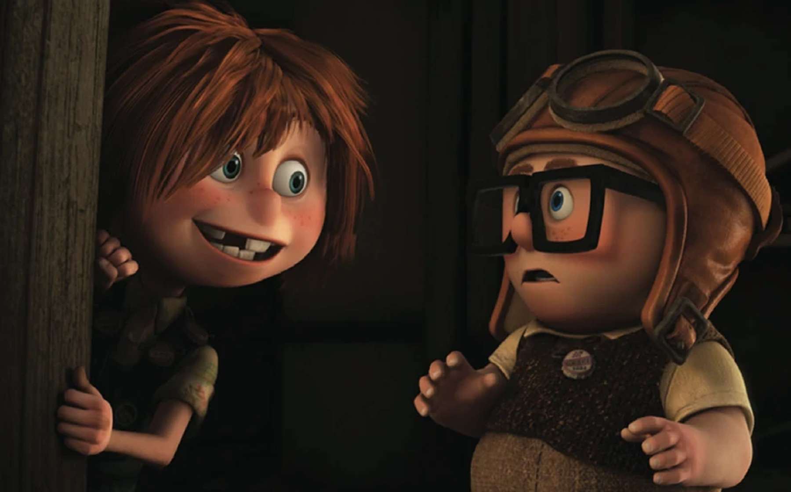

"Adventure is out there!"
잊지 못할 모험, 지금 시작됩니다.
"Adventure is out there!"
잊지 못할 모험, 지금 시작됩니다.

칼 프레드릭슨
80세
풍선 판매원(은퇴) 및 모험가
칼 프레드릭슨은 어린 시절부터
모험을 꿈꿨지만, 사랑하는 아내 엘리와의
평범한 삶에 안주하며 그 꿈을 뒤로한 인물이다.
엘리의 죽음 이후 그는 외롭고 고집스러운
노인이 되었지만, 소년 러셀과의 여정을 통해
다시 삶의 의미를 되찾고,
닫혀 있던 마음을 열어가며 변화해간다.
러셀
10살
야생 탐험대 소년 탐험가
러셀은 밝고 말이 많으며 호기심이 많은
열 살 소년으로, 야생 탐험대 배지를
모두 모으기 위해 마지막 배지인
노인 돕기미션을 수행하던 중 칼과 함께
모험을 떠나게 된다.
엉뚱하고 수다스럽지만 진심 어린
배려심을 가진 러셀은, 칼의 굳게 닫힌
마음을 열게 해주는 따뜻한 존재로,
그의 순수함은 이야기 전반에
활기를 불어넣는다.
더그
성견
정찰견
더그는 특수 목걸이 덕분에 말을 할 수
있는 황금 리트리버로, 천진난만하고
충성심이 강하며, 새로운 친구를
진심으로 따르는 따뜻한 성격을 지녔다.
원래는 찰스 먼츠의 정찰견이었지만,
칼과 러셀을 만나 진정한 유대와
가족의 의미를 배우며 함께 모험하게 된다.
케빈
성체
멸종위기종
케빈은 영화 속에서 칼과 러셀이 만나는
희귀하고 거대한 새로, 다채로운 색깔과
독특한 외모를 가진 상상의 동물이다.
처음에는 쫓기는 존재였지만, 러셀과 칼의
보호를 받으며 이야기의 중요한 동료가 된다.
케빈은 자유와 자연의 상징이자,
모험의 재미를 더해주는 캐릭터이다.

찰스 먼츠
80대 초반
모험가이자 수집가
찰스 먼츠는 한때 유명했던 탐험가였지만,
자신의 명예에 집착하며
점점 광기에 사로잡힌 인물이다.
그는 타인을 믿지 못하고 오로지
자신의 목표만을 좇으며,
점점 고립된 삶을 살게 된다.